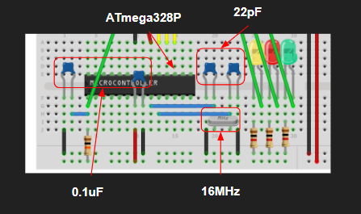
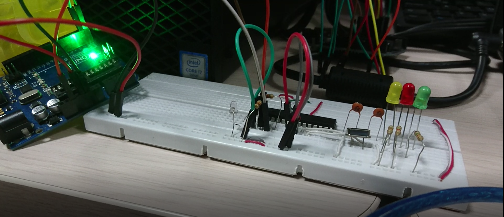
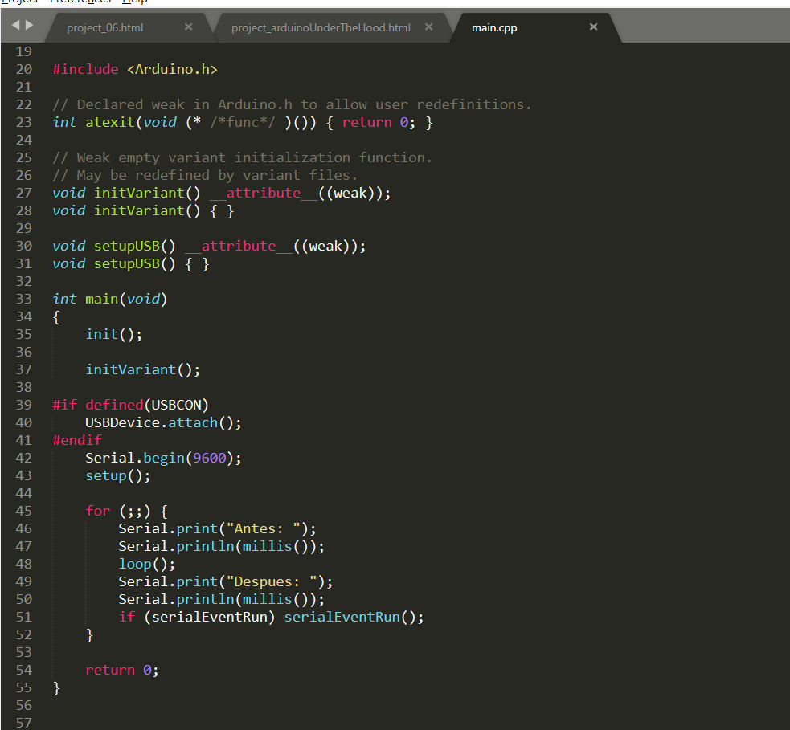
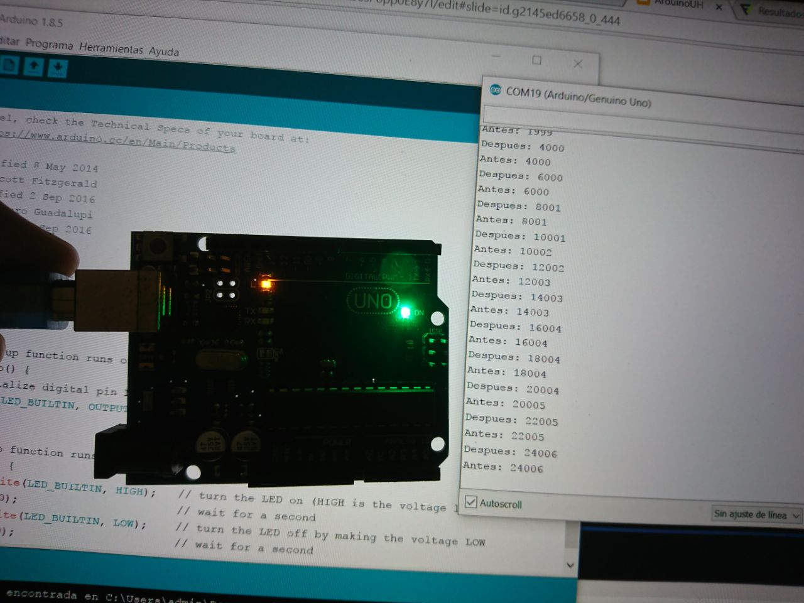
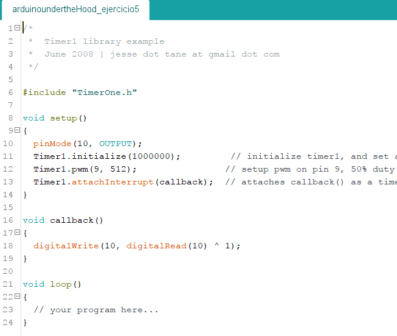

-

Arduino Under The Hood.
Todo este proyecto se realizó para trabajo en clase de Controladores a finales del curso para el pregrado de Ingeniería en Diseño de Entretenimiento Digital.
Puedes descargar la carpeta con los resultados finales de esta parte dando click aquí.
EJERCICIO 1: MICROCONTROLADOR + PROGRAMADOR.
Se realizó el montaje mostrado en el circuito anterior. Al tener el circuito conectado se abrió el ejemplo ArduinoISP (In-System programing) para programa la targeta de arduino como una interfaz de programación. Para esto necesitamos descomentar del ejemplo anterior la linea de código #define USE_OLD_STYLE_WIRING y se programa en la targeta. Luego se realizó un programa en el que se enciende y apaga un led conectado a D2 (este puerto podemos encontrarlo en el plano del arduino UNO R3) y se cargó el archivo al microcontrolador de la protoboard utilizando Using Programmer del menú sketch del IDE de Arduino.
EJERCICIO 2: PROGRAMAR EL BOOTLOADER DE ARDUINO.
Para programar el Bootloader debemos asegurarnos que nuestro arduino cuenta con el Programa ArduinoISP y en el menú Tools seleccionamos la opción de Burn Bootloader.
Después de esto utilizamos una placa de arduino para comunicarnos directamente con el Bootloader. Muchos se preguntarán ¿Cómo hago esto? Pues muy sencillo lo que tienes que hacer es revisar de nuevo el plano de Arduino R3 y analizar un rato su conexión.
Analizando el plano podremos darnos cuenta de que la comunicación se hace entre los pines Rx, Tx y Reset del arduino, a los puertos PD0, PD1 y PC6 respectivamente y listo, ahora podemos cargar el sketch a nuestro microcontrolador utilizando el botón de carga del IDE Arduino, no el Using Programmer del menú sketch.
EJERCICIO 3: EXPLORANDO LA CARPETA ARDUINO.
En esta parte de trabajo conocimos un poco sobre todo lo que compone la carpeta arduino.
¿Qué contiene la carpeta drivers? ¿Para qué sirve?
R. Los drivers son para poder hablarle al sistema operativo, son los que se encargan de que este sepa como se le está hablando.
¿Qué contiene la carpeta examples y cuál es la relación con los ejemplos del IDE de arduino.
R. La carpeta examplescontiene los ejemplos principales de las funcionalidades de arduino.
¿Qué contiene la carpeta libraries?
R. La carpeta libraries son todas las librerias. Estas son lasque salen debajo de los ejemplos que podemos ver en el IDE de Arduino.
Abra la carpeta hardware/arduino/avr/cores/arduino ¿Qué contiene esta carpeta?
R. Esta carpeta contiene todo el frameWork o codigo fuente de arduino.
RETO
- Busque el archivo main.cpp.
-Modifique este archivo de tal manera que antes y después de llamar la función loop se envíe por serial el valor de la función millis().
- Salve el archivo main.cpp con los cambios.
- Abra el IDE de arduino y cargue el ejemplo Blink.
- Abra la consola.
- ¿Qué se puede concluir?
A esto se puede concluir que acabamos de modificar las funcionalidades de arduino. Ya que emos editado su codigo fuente podemos utilizarlo para hacer que funcione como nosotros queramos.
EJERCICIO 5: INTERRUPCIONES.
IMPLEMENTE un programa que prenda y apague un LED a 1Hz utilizando interrupciones.
PROYECTO EN ATMEL STUDIO 7
Puedes encontrar la carpeta con este ejercicio en la parte superior de la página donde estan todos los archivos desarrollados en este ejercicio.
CALCULADORA SERIAL CON TIMEOUT
Utilizando interrupciones implementa una calculadora que:
- Pida ingresar la operación: +, - *, /, %.
- Pida los operandos.
- Si el ingreso de cualquiera de los operandos tarda más de 5 segundos, aborta la operación. (Los tiempos deben medirse utilizando interrupciones).